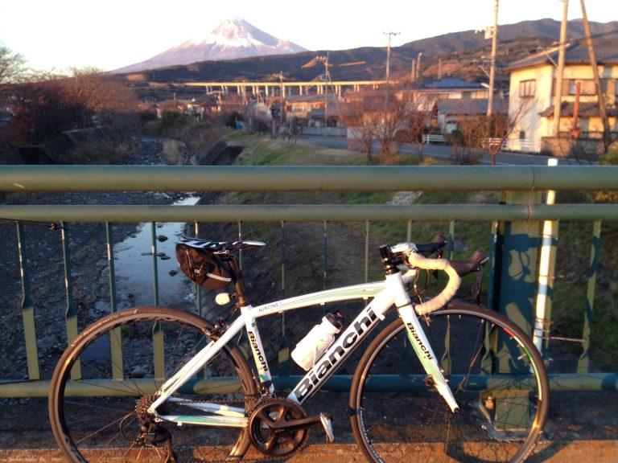
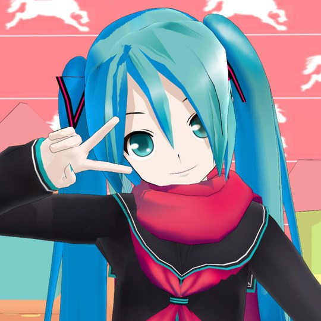
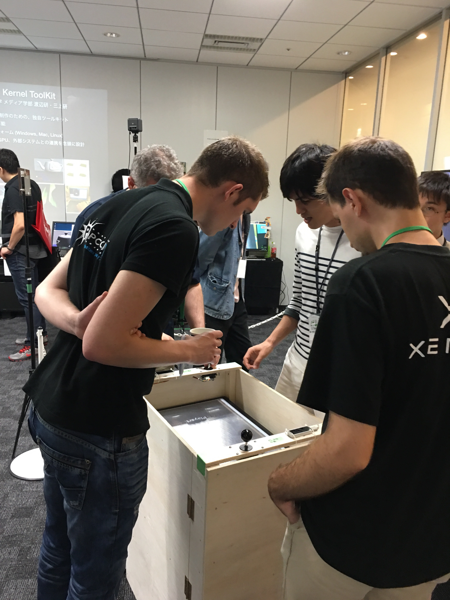
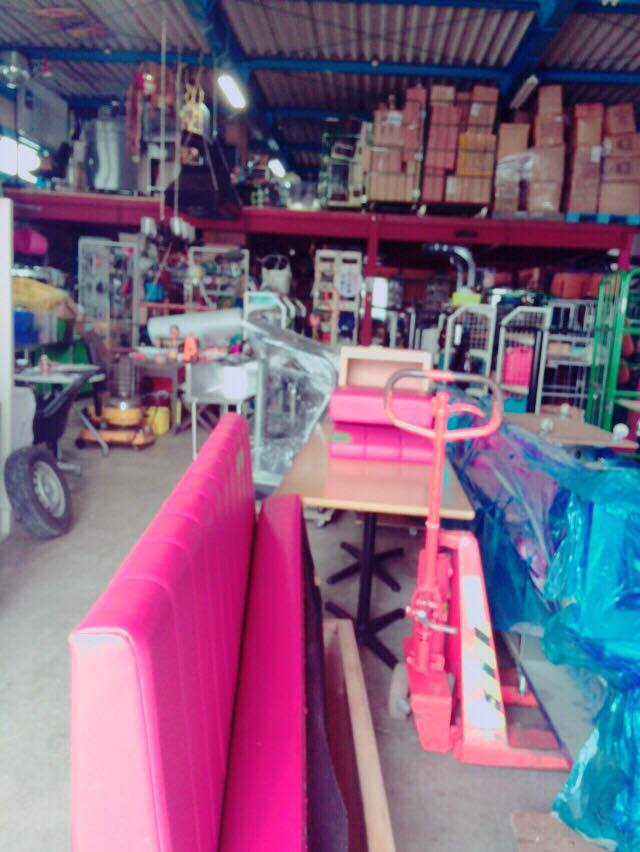
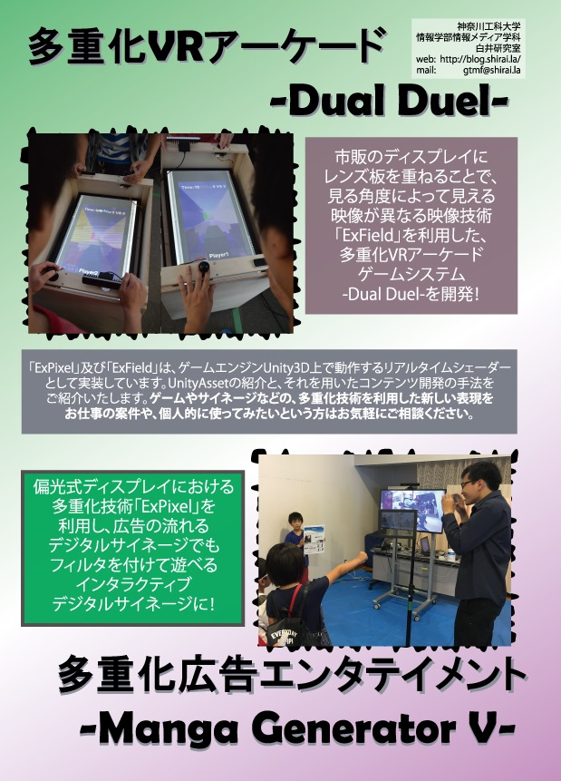
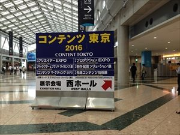
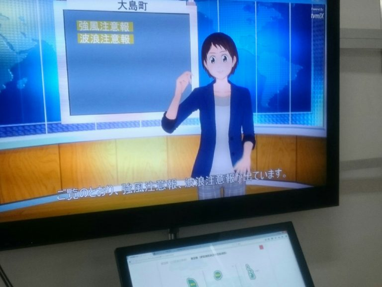
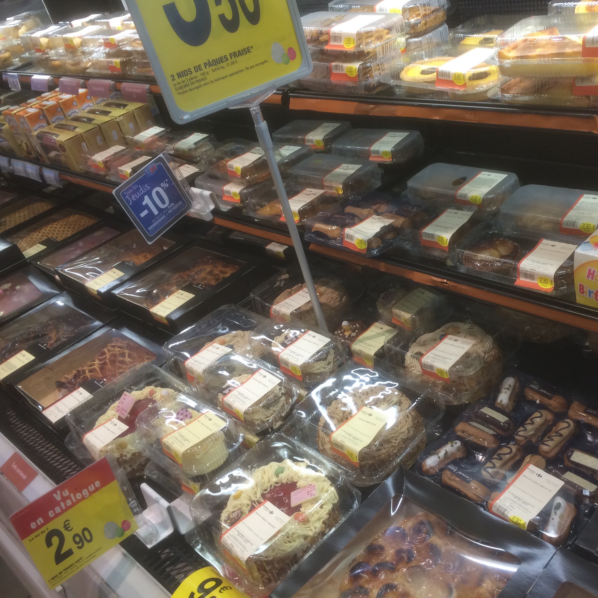
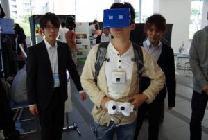

News
-
望月 宥冶 wrote a new post, 第5回セミナー 1423089 望月 宥冶/転がらないディスカッション, on the site 白井研セミナー 3年 11か月前
こんにちは。
1423089の望月です。今回もIVRCの企画についてグループディスカッションをしました。目標は「企画書に書けるレベルまでまとめること」でしたが、このグループディスカッションをどう転がしていけばいいかわからず、終始瞑想状態でした。
その後、このディスカッションでなにを話し合うべきだったのか助言を頂きました。
・ゴールの共有
・みどころの表現
・ナラティブの提案
・どういう人（ペルソナ）[…]
-
望月 宥冶 wrote a new post, 第4回セミナー 1423089 望月 宥冶/今年の目標とIVRCに向けて, on the site 白井研セミナー 3年 11か月前
こんにちは。
1423089の望月です。今年ももう半分が終わろうとしている…ということで、今回は今年の目標の確認をしました。私の目標は「基本情報合格」ということで資格取得です。ただこの資格ですが、情報系を先行する人なら持ってて当たり前のような（一般人で例えると普通免許みたいな）立ち位置にある資格だと思っています。この資格に受かるのは最低ラインとして、応用情報も視野に入れながら資格について考えたいと思います。[…]

-
望月 宥冶 wrote a new post, 第3回セミナー 1423089 望月 宥冶/ グループディスカッションのコツとIVRCのネタ出し, on the site 白井研セミナー 3年 11か月前
こんにちは。
1423089の望月です。IVRCのネタ出しをしました。
最初は１人ずつ考えてきた企画を出し合い、その中で「こうしたら面白いかも」と少し討論を挟みながら、２回目で自分と他人の意見をくっつけたものや、この意見はこうしたら面白いといったような(例「ハンマー投げのハンマーになる」)案を出し合い、最終的に出てきた企画を「不可能系」「シチュエーション系」「ハイクオリティ系」「モテたい」「これは売れそう」の5種類[…]
-
望月 宥冶 wrote a new post, 第2回セミナー 1423089 望月宥冶/ 某S社のES公開, on the site 白井研セミナー 3年 11か月前
こんにちは。
1423089の望月です。第2回セミナーでは、大手S社のESを参考に主な書き方について学びました。
まず最初に英語力、その他外国語の能力についての質問…
私の場合だとなにも書くことがないので、もし私が就活生でしたらヒヤッとしていたと思います。次は「気になるトピックスについて」の質問
ここでは(コンテンツ、テクノロジー、ニュースなど)と書かれていたので、それらについて述べていくのですが、[…]
-
望月 宥冶 wrote a new post, 自己紹介 1423089 望月 宥冶/自転車競技やってます。, on the site 白井研セミナー 3年 11か月前
初めまして。
学籍番号1423089 望月 宥冶（モチヅキ ユウヤ）です。
大学では自転車部に所属し、毎月1回以上 大会にも出場します。
後輩が管理してくれている自転車部のブログがあるので、是非、ご覧ください。
こちらから静岡県出身で、現在は相模大野で一人暮らし中。
大学までは、[…]  -
shirai wrote a new post, 卒業生による「PLAYCANVAS」ワークショップ開催（7/18）, on the site Shirai Lab 3年 11か月前
主に「ゲームプログラミング」受講生の皆さん
次回7/18(月)ですが（教務課の都合で月曜日2限がとれず）月曜日3限で同じ教室「K1-303」にて実施予定です。
★海の日補講ということもあり、受講生の皆さんは他の講義、就活やプロジェクト等で欠席予定があれば事前にお伝えください。内容は、講義のFacebookにも掲示しておりますが、以下の通りになります。
本学情報メディア学科卒業のゲーム開発者をゲスト講師としてお[…]  -
hisataka wrote a new post, 【GTMF2016】多重化体験キット ダウンロード, on the site Shirai Lab 3年 11か月前
2016/7/15開催のGTMF2016のSMILESの神奈川工科大学のブースにて、多重化映像技術ExPixelおよびExFieldの開発者向け体験キットのご紹介をしております(詳細)。
このキットを使えば誰でも、実行ファイルを動かすだけで好きな画像を多重化映像として試すことができます。
以下のURLからご登録の上、ダウンロードお願いいたします。GTMF2016多重化映像体験キット
なお、お問い合わせ経由で[…] 
-
yoshiki wrote a new post, ブログrestart, on the site yoshikiのブログ 3年 11か月前
こんにちは、yoshikiです。
この度、冬眠していたブログが復活いたしました。
今後ともよろしくお願いします。
yoshiki 
-
sakakibara wrote a new post, Unity PlayerPrefsとファイルの書き出しと読み込みを使ったプレイログ取得・利用, on the site R-Diary 3年 11か月前
今回私は
作成したゲーム中でプレイのログをとり、そのログを使ってリプレイ機能を実装するために、ファイルの読み書きとPlayerPrefs機能を利用しました。
まず、参考にしたサイトはこちらです。
UnityでCSVを書き出す
PlayerPrefsスクリプトリファレンス
使用言語C#
まずは、Streamwriterを使ってファイルにログを書き出す部分です。
using System.[…]

-
hisataka wrote a new post, GTMF2016 SMILESに多重化映像技術を展示します！, on the site Shirai Lab 3年 11か月前
7/15(金)に秋葉原UDX GALLERY NEXT THEATERにて行われる、GTMF(Game Tools & Middleware Forum)2016に、多重化映像技術を展示し[…] 
-
錦澤 竜也 wrote a new post, 展示会 行ってきた コンテンツ東京2016!!, on the site 白井研セミナー 3年 11か月前
見学してきたよ、コンテンツ東京2016
6月30日東京ビッグサイトで行われたコンテンツ東京に行ってまいりました。お目当てはAI・人工知能ワールドだったんですが、先端コンテンツ技術展のほうに夢中になってしまいました。なんで先端コンテンツ技術展エリアで注目した企業様ブース中心の記事になります。
[スパイス社]
HMD装着してバスケットボールをパスしてます。写真にはありませんがドリブルも[…] 
-
-
-
浅野 隆弥 wrote a new post, 東京遠征① 浅野隆弥/Nerd、技術に触れる1, on the site 白井研セミナー 3年 11か月前
こんにちは、浅野隆弥です。
5月27日(金)にNHK技研公開2016とGameOnにいってきました。
その時のことを2回に分けてレポートしたいと思います。まず始めにNHK技研公開についてですね。一番最初に通されたのはスーパーハイビジョンエリアです。
8kテレビ…、フレーム周波数120Hz…、22.2マルチチャンネル…、なるほど…分からん。よし次だ!
で、次にきたのがインターネット活用技術[…]  -
Yuta Yamaguchi wrote a new post, 科学のひろば2016：神奈川県立青少年センターで公開実験, on the site Shirai Lab 3年 12か月前
今年も「神奈川県立青少年センター」で神奈川工科大学主催の一般向け科学イベント「科学のひろば」を開催します。白井研究室開設の2010年以来、毎年参加しているイベントで、公開実験を兼ねています！
開催日：2016年6月18日(土) 開催時間 10:00~15:30
開催場所：神奈川県立青少年センター 2F 横浜市西区紅葉ケ丘9-1
主催：神奈川工科大学 共催:神奈川県立青少年センター[科学のひろば2016ポス[…]

-
Ryotaro Tsuda wrote a new post, 就活から1年，思ったことがあったので書く, on the site 汗を流して飯が旨い 4年前
気づいたらもう６月になっていた
最近は蒸し暑い日が多く,正直自分には生きづらい時期だ.
丁度去年の今頃,自分は就活をしていた.
結構しんどかったことを覚えている.
それから１年弱,今度は新卒１年目として,町中で頑張っている就活生を見かけたり,
出身研究室の後輩を応援したり,母校に弊社の紹介をしたりする立場になった.今日,行きつけのバーで飲んでいたら,
研究室の後輩から,志望していた企業に内定が決まっ[…]
-
Ryotaro Tsuda wrote a new post, chocolateyはいいぞ, on the site 汗を流して飯が旨い 4年前
最近は専らpowershellを覚えてそれでバリバリ作業中。
そこで初めて使った環境構築ツール「chocolatey」が良かった。
アイキャッチ画像は全然関係ないけど,
Google Photoで「チョコレート」で検索したら出てきたフランスのスーパーで撮った一枚余談:powershellは開発言語らしい…
そもそも今までブラウザから探してinstallしていた人間だったので
packageで落として一括[…]  -
内藤 翔太 wrote a new post, 第三回セミナー 内藤翔太 グループディスカッションとIVRCネタ評価, on the site 白井研セミナー 4年前
第3回セミナーではグループディスカッションについてとIVRCのネタ評価について学びました。
まずグループディスカッションは最低、会社の事を知っていれば出来る内容となっています。
しかし、それは戦術。
グループディスカッションの基本の戦略としてはまず。チームを勝利（面白くて現実的な案）へ導く事です。
そして、個人の戦略は意見のまとめ役になるということです。
進行、司会役になりみんなのアウトプットを促す役割は重要でと[…] -
内藤 翔太 wrote a new post, 第二回セミナー 内藤翔太 ESとIVRC2014, on the site 白井研セミナー 4年 1か月前
二回目で学んだこと
エントリーシートで大切なことは戦術以外にも戦略が大事。
戦術は文字が綺麗、誤字脱字が無い、良い文章などなどですが。
戦略は権限が強い人に気に入られるような文の内容にする。ということを学びました。
確かに、力が弱い人が何人も気に入られても、決定権のある人が納得しなければ意味があんまりないなと思います。また、入社理由に好きは意味が無いとは聞いたことがありましたが嫌いも意味が無いということは驚[…] 
-
shirai wrote a new post, 2016年度前期セミナー始まりました, on the site 白井研セミナー 4年 1か月前
以下のメンバーで活動開始です！
1423089 望月 宥冶
1423108 内藤翔太
1423115 錦澤竜也
1423120 中川 遥介
1423127 萩原 祥太
1423130 志村 陽一
1423131 影嶋 鼓宇
1423139 武田 竜平
1423145 浅野 隆弥早速自己紹介を投稿していただいております。
お目汚しもあるかもしれませんが，以後よろしくお願いいたします．

- もっと読み込む